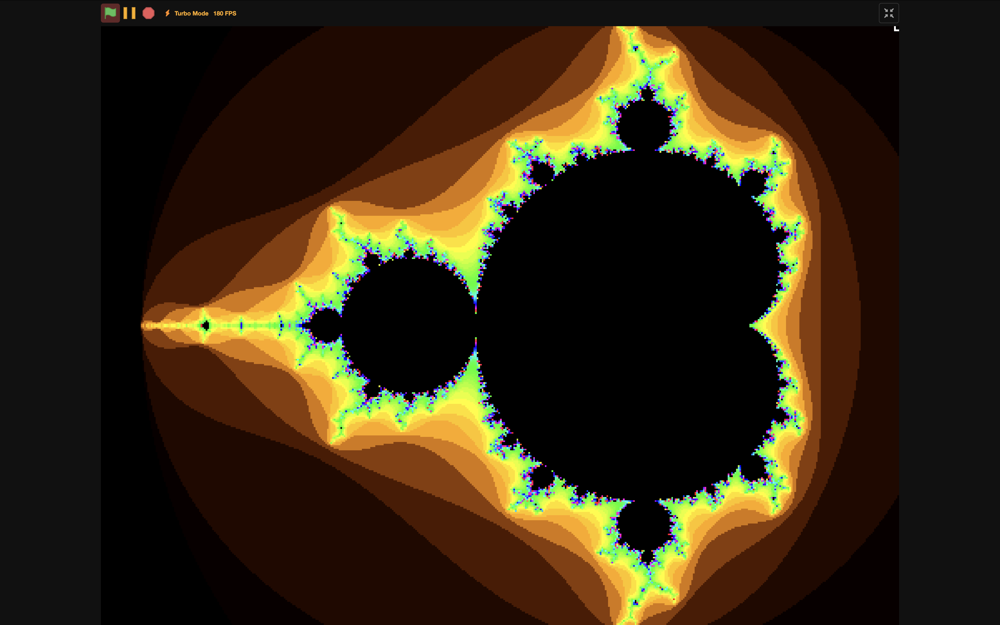

An introduction...Long before time had a name, I built these projects. Armed with nothing but Stack Overflow discussions, I knew every intricacy, every glitch, and every easter egg. I was familliar with every line of code. That time has long since passed. Now, the poorly-formatted JavaScript whispers to you. Project GalleryPresenting: pretty useless gimmicks. 
neuMetronomeMay 2024 • HTML, JS, CSS • Desktop A JS metronome with a neumorphic aesthetic. read more/less run project go to sourceMobile browsers tend to hate JavaScript, rendering this tool impractical for work with actual instruments. On the pro side, with a stable internet connection, this metronome maintains a maximum drift of ±1 millisecond every 300,000 years. We love NTP. 
calculateUD v2February 2024 • HTML, JS, CSS • All devices Outdated grinding calculator. (Please touch grass.) read more/less run project go to sourceFor you chronically online nerds who spend every hour of the day on I‑76, here's a tool to simplify your grinding experience. UDGC can solve for how many miles you need to drive in order to reach a rank or credit goal. (This also works with French cars.) 
stupidCalculatorJanuary 2024 • HTML, JS, CSS • All devices The world's most (least) advanced calculator. read more/less run project go to sourceIt's a command-line calculator, and its *really* fast (slow). What else can I say? 
stupidCalendarJanuary 2024 • HTML, JS, CSS • All devices It's like a smart display, except stupid. read more/less run project go to sourceEver wonder what time it is 4/9ths the way around the world? Want to know what day of June it is? If so, this is the calendar for you! StupidCalendar provides a static timestamp from a random timezone and a unusable date format. Now with dark mode. 
calculator_December 2023 • Scratch 3.0 • Desktop Fully functional graphing calculator made on Scratch, Desmos-style. read more/less run project go to sourceA fully-functional scientific graphing calculator built on Scratch. Calculator_ is capable of trigonometry, exponents, and radicals, providing it all in a clean, navigable GUI. This was my most ambitious project at over 4,000 blocks of code. 
Vegetable SamuraiNovember 2023 • Scratch 3.0 • All devices This is not a knockoff of a certain fruit slicing game. read more/less run project go to sourceThis project scored me a 5 on the AP Compsci Principles exam.

mandelbrotterSeptember 2023 • Scratch 3.0 • All devices This project was made with the help of AI tools. [Mandelbrot] fractal rendering engine on Scratch - assisted by ChatGPT 3.0. read more/less run project go to sourceEven though ChatGPT did a lot of the heavy lifting, I ultimately learned a ton about fractal rendering when I translated the pseudocode into usable blockcode. It was also pretty fun to design the UI and viewport mechanics. You've reached the end......of the gallery. The rest of my work is still scattered across the internet. This is just the stuff I'm holding on to. |
Contents
|